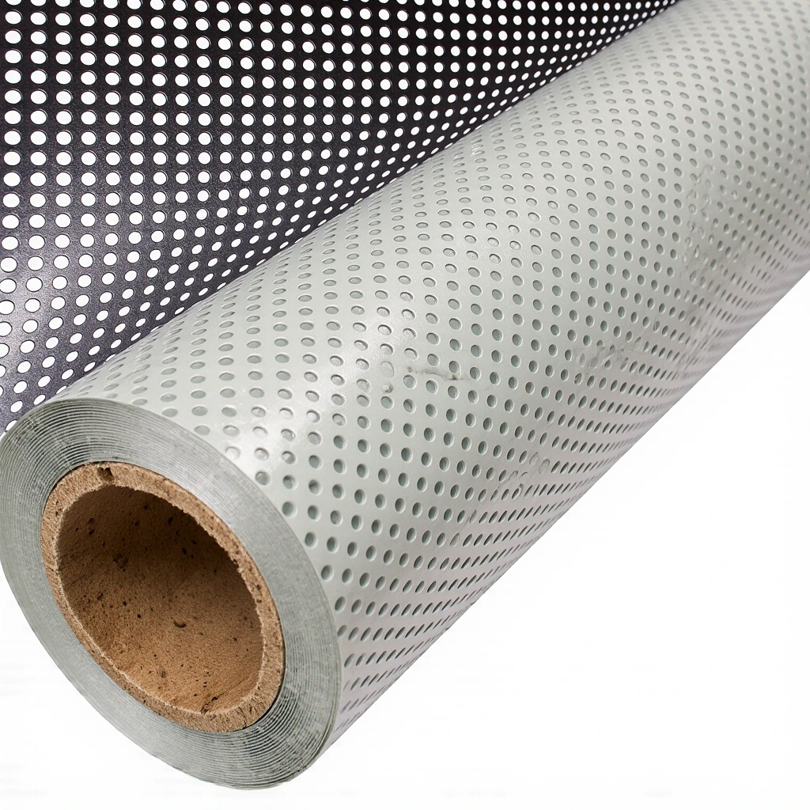

Mağaza Vitrinleri
Vitrini tamamen kapatmadan kampanya, logo ve ürün görseli yerleştirmek için.

One way vision, yani delikli folyo, vitrin ve ofis camlarına baskı yapıştırırken içerideki manzarayı kapatmayan özel bir cam kaplama malzemesidir. Dışarıdan bakan kişi baskıyı görür, içeriden bakan kişi ise camın ötesini görmeye devam eder.
Valexira Dijital olarak baskı sürecini baştan sona yönetiyor, camınızın ölçüsünü alıp uygulamayı tamamlıyoruz.
Malzeme, üzerinde çok sayıda küçük delik bulunan bir folyodur. Dışarıya bakan yüze baskı yapılır, iç yüzey koyu renklidir. Dışarısı aydınlık, içerisi daha loş olduğunda baskı dışarıdan net görünür, içeriden bakan kişi ise delikler sayesinde dışarıyı görebilir.
Aydınlatma koşulu önemlidir: akşam saatlerinde içerisi dışarıdan daha aydınlıksa, dışarıdaki kişi baskıyı değil içeriyi görmeye başlayabilir. Bu yüzden uygulamadan önce camın yönünü ve ortam ışığını birlikte değerlendiriyoruz.
Vitrini tamamen kapatmadan kampanya, logo ve ürün görseli yerleştirmek için.
Kurumsal görsel ve marka uygulamasıyla birlikte dışarıdan görünürlüğü azaltmak için.
Ticari araç ve bina cephelerinde reklam uygulaması için. Uygunluk, kullanım alanına göre ayrıca değerlendirilir.
Delikli folyo, içeriden dışarının görülmesine izin verir. Düz baskılı cam folyo ise ışığı ve görüşü büyük ölçüde keser. Buzlu (kumlama) folyo ışığı geçirir ama görüşü bulanıklaştırır.
Gün ışığında dışarıdan içeri genellikle zor görülür. Gece içeride ışık yanıyorsa görünürlük artabilir. Gizlilik sizin için öncelikliyse bunu keşif sırasında konuşalım.
Delikler sayesinde dışarısı görülür, ancak cam bir miktar koyulaşır. Işık geçirgenliği baskının yoğunluğuna göre değişir.
Fiyat; camın toplam metrekaresine, baskı yoğunluğuna ve uygulamanın yerinde yapılıp yapılmayacağına göre belirlenir. Ölçülerinizi gönderirseniz teklif hazırlarız.